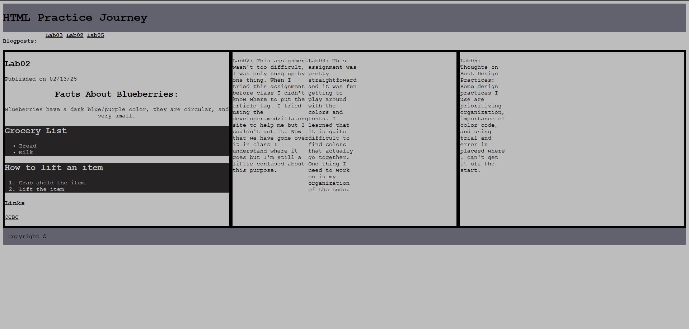

Responsive Layout Project
About
In this lab, I modified a blog page to create a responsive design. I implemented a single-column layout for mobile devices and a multi-column layout for desktops using flexbox and media queries. Additionally, I added internal navigation using link anchors to allow users to jump to specific blog posts on the page.
This Web Page is made with A Responsive Web Design, go ahead and try it yourself.
Breakpoints Strategy
| Screen Width | Layout Approach | Techniques Used |
|---|---|---|
| 1200px and above | 3-column desktop layout | CSS Grid |
| 768px-1199px | 2-column tablet layout | Flexbox |
| 767px and below | Single-column mobile layout | Stacked blocks |
Lessons Learned
- Design for mobile first
- Flexbox for flexible component layouts
- CSS Grid for complex page layouts